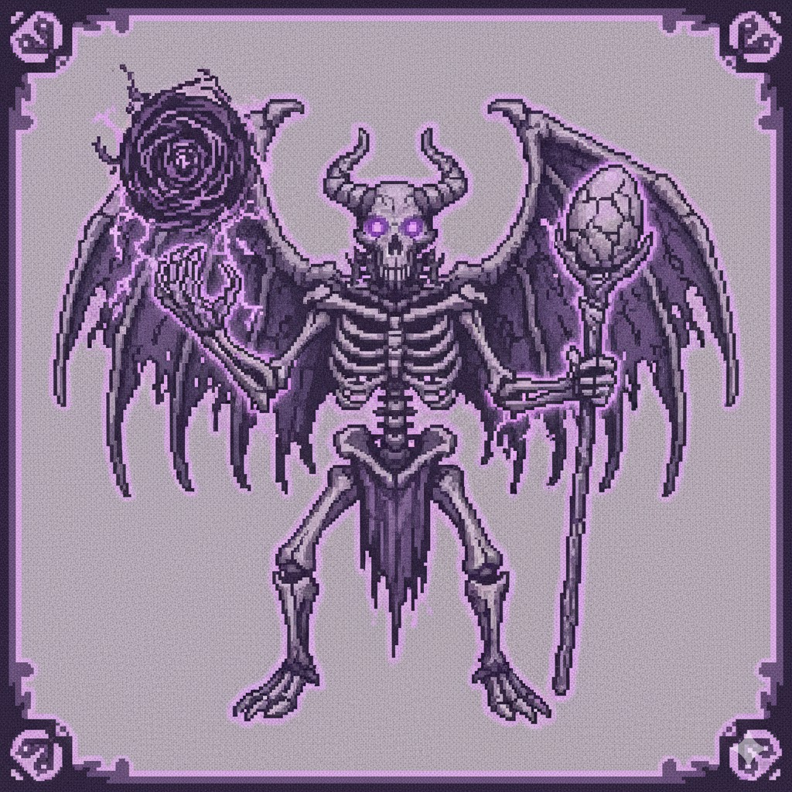
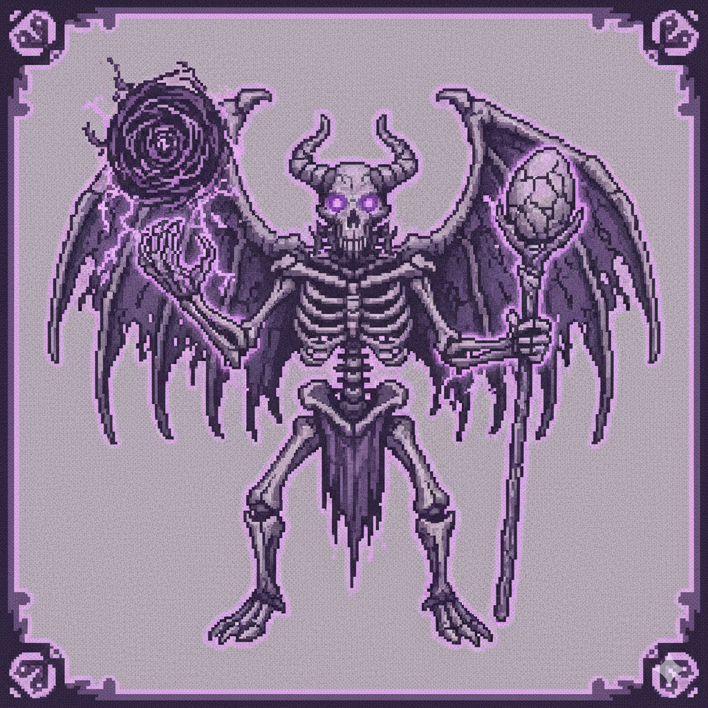

OS GUARDIÕES
Chefes e Sub-Chefes
O CRONISTA PRIMAL

STATUS
FORÇA: ANCIÃ
TRIBOS: TODAS
DIFICULDADE: DEMO (FÁCIL)
LORE
O Cronista é o narrador e o mestre de Primal. Um ser feito de matéria fóssil e mistérios do passado. Na demo, ele serve como seu primeiro oponente, dominando as regras básicas e guiando sua ascensão.

CRONISTA
BLOQUEADO
BLOQUEADO
BLOQUEADO